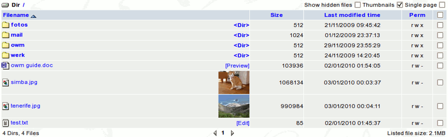

The Webdisk module provides a web interface for the user to
access
his home directory as a virtual disk on the web. The top directory of
the virtual disk is mapped to the user's home directory, and any item
displayed in the virtual disk is actually located under the users home
directory. Like an 'normal' disk it consist of directories and
files. Windows users please note: 'directories' are the same as
'folders' in Windows.

Navigating in your Webdisk space goes as follows:
| Action |
How
|
To change directory
| Just click on the directory name
|
To go up one level in the directory tree
| Click on the 'up arrow' yellow icon on the left of the 'Dir' line
|
To go to the top level (home) directory
| Either repeat the 'up one level' step a few times, or click on the '/' link to the right of the 'Dir' text
|
What happens when you click on a filename
depends on the file type. If your browser knows how to handle this file
it will open it straightaway. This is almost certainly the case with
graphics files (JPEG, GIF, etc.). MS Word files can be opened using a
simple viewer, which allows you to see the text with only very basic
formatting (click 'Preview'). Text files can be edited using a simple built-in editor (click 'Edit').
The Webdisk can make thumbnails of graphics files (JPEG, GIF, etc.) and display them. First, you need to activate the Thumbnails
checkbox at the top right of the Webdisk. Then, you need to select the
images you want to make thumbnails for and click the button that says
MkThumb.
Clicking the Single page checkbox at the top right of the Webdisk lets you display all the folders and files on one page. See
Webdisk Options
to change the number of items that standard will be shown on the page.
The Show hidden files checkbox
list directories and files starting with a . (dot). Normally you don't
have to acces those items. So do not delete these directories and do
not edit any files in it unless you really know what you are doing and
have a backup copy of your folders in case something goes wrong.
'Perm' stands for (file) permissions (who can do what with the file). What can you do with these funny letters in the Perm column? In fact there are multiple responses to this question:
- The simplest (and not a very helpful and/or polite)
answer: there is nothing you can do yourself about controlling other
users' access to your files, therefore you don't really need to know.
- A marginally more informative answer: these are Unix
'symbolic file modes' (r=read permission, w=write permission, x=
execute, or list directory, permission). The first letter
describes your (file owner's) permissions, the second describes
permissions of members of the same group, and the third one -
permissions of anybody else. You have to ask your system administrator
to allow others to access to your files, so you cannot change these
letters yourself anyway.
- A 'finger pointing' answer: read the OpenWebmail documentation which may explain why the authors though it appropriate to show fields which are not under the user's direct control.
A
possible use of the permissions: if you want to disable access to
your public-based website while keeping the files in place, tick the
box on the right-hand side of your "public" directory (for accessing
the whole site) or of the file name (accessing specific files), and
then click the Chmod button at the bottom. A pop-up window will tell
you the values to use to keep files/directory public or private.
Remember that if you make files private, nobody (including you, the
owner) will be able to access them from a browser.
The 'mail' directory contains
all your mail folders except the Inbox. So do not delete this directory
and do not edit any files in it unless you really know what you are
doing and have a backup copy of your folders in case something goes
wrong.
|
){kind=link}